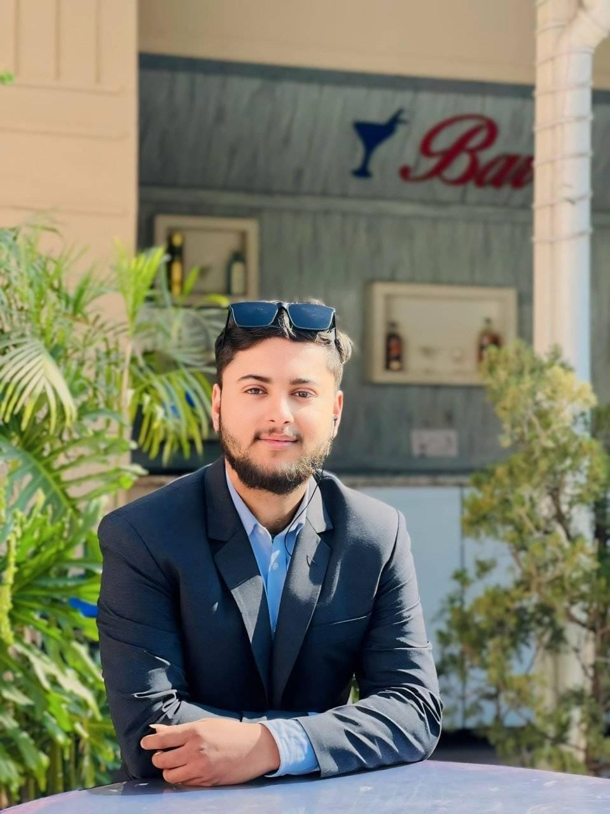
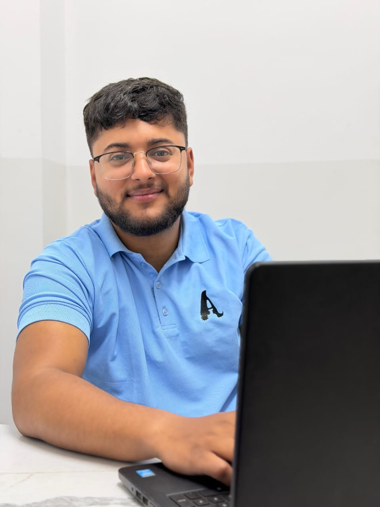

Support Manager
CurrentDevanasoft Pvt. Ltd. · Gatthaghar, Kathmandu
Technical support, customer issue resolution and operational coordination.
Hello, I'm
I work in |
Support Manager and multidisciplinary technology professional with experience across IT operations, technical support, finance and business systems.
Devanasoft Pvt. Ltd.
Hi, I'm Aashish Upadhyaya, an IT professional and Support Manager with a strong background in IT support, computer networking, software troubleshooting, and technology-driven business operations.
With experience across cooperative banking, financial services, education, and IT service management, I specialize in troubleshooting technical issues, supporting business applications, maintaining IT systems, and helping organizations operate more efficiently through technology.
My professional journey has allowed me to work across technical support, IT department management, finance and technical operations, and banking environments. I enjoy solving complex problems, learning new technologies, and finding practical solutions that connect technical requirements with real business needs.
My technical skill set includes computer hardware and maintenance, networking, software support, Microsoft Office applications, and website development, supported by my CCNA and hardware repair knowledge.
I believe technology is most valuable when it simplifies work, improves reliability, and creates meaningful results. My goal is to continue growing as an IT professional while contributing to innovative solutions that help businesses become more efficient, secure, and technology-driven.
My Philosophy: Where technology meets business, possibilities become solutions.

Roles and internships listed in my curriculum vitae. Dates are shown where available.
Devanasoft Pvt. Ltd. · Gatthaghar, Kathmandu
Technical support, customer issue resolution and operational coordination.
Abroad Education Consultancy Services Pvt. Ltd. · Bagbazar, Kathmandu
Royal Multipurpose Cooperative Society · Basundhara, Kathmandu
Muktinath Bikas Bank · Corporate Office, Kamaladi
Agricultural Development Bank Ltd. · Ishworpur, Sarlahi
Ideal Co-Ed. Academy · Lalbandi, Sarlahi
Shree Phooljor Baba Saving & Credit Cooperative Society · Sarlahi
Networking, CCNA knowledge, computer hardware repair and troubleshooting.
Software operations, banking systems, school management software and user support.
Microsoft Word, Excel, PowerPoint, email and internet tools.
Website development, Photoshop, CorelDRAW, PageMaker and FreeHand.
Financial operations, remittance, IT administration and cross-functional coordination.
Technical leadership, service coordination and practical problem-solving.
Shree Narayan Multiple Campus · Ishworpur, Sarlahi
Accountancy · Economics · Business Statistics · ManagementShree Narayan Multiple Campus · Ishworpur, Sarlahi
Business Studies · Accountancy · Economics · Business MathematicsGyanodaya Secondary English School · Ishworpur, Sarlahi
General educationPractical insights on technology and professional growth.
A complete beginner’s roadmap covering IT support, networking, Linux, cloud, cybersecurity, certifications and practical projects.
Read article ↗
LET'S TALKI'd love to hear about professional opportunities, collaborations and interesting challenges.
aashishbw@gmail.com · +977 9844392376
Chat with me directly using the live-chat assistant.